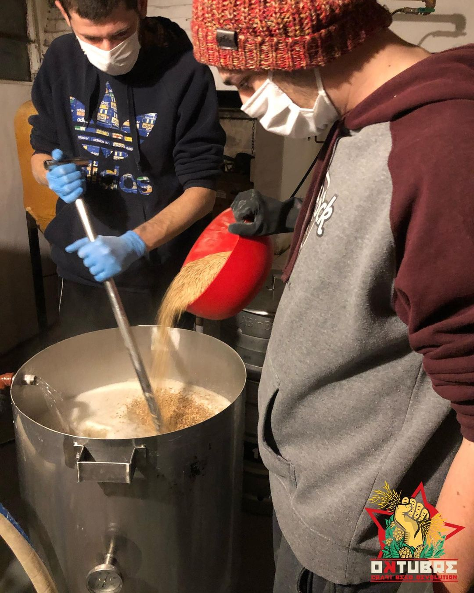
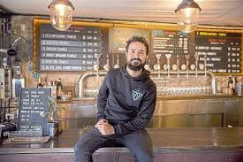
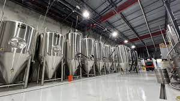

Foto de nuesta primera coccion en el quincho de la nona.
Nuestro primer bar el que todavia podes encontrar en Pilar.
Y con ustedes los fermentadores de nuestra fabrica.
Somos Oktubre
Un proyecto iniciado en 2019 por Lucas y Manuel que hoy se convirtió en un equipo que se dedica a crear una experiencia sobre la CERVEZA. Esas recetas complejas que le gustan a todos los expertos en cervezas, las reconvertimos, las reversionamos y le agregamos un poco de magia adaptándolas al gusto de todos, para que puedas tomarte una cerveza compleja y totalmente balanceada. Desde los inicios, cuando cocinábamos en Pilar en quincho de la casa de la Nona, lugar dónde montamos nuestro primer equipo, que nos sentimos atraídos por realizar recetas diferentes probando nuevas cervezas, estilos y variantes de insumos donde dedicando horas y horas de estudio e incansables batchs de prueba y error para manejar esta alquimia que tanto nos emociona. Nuestros primeros pasos a escala mayor fueron por el 2021 en dónde compramos nuestro primer fermentador de 2000 litros y empezamos a cocinar en la fábrica de unos amigos en Colegiales, mientras buscábamos seguir cumpliendo los hitos planteados en nuestro minucioso plan de negocios. Finalmente pudimos avanzar en montar nuestra actual fábrica en pilar, Buenos Aires en dónde orgullosamente formamos una familia de manijas por la cerveza.
¡Bienvenidxs a Oktubre!
Tambien te enseñamos a hacer cerveza Artesanal